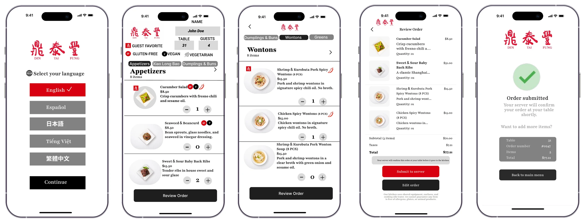
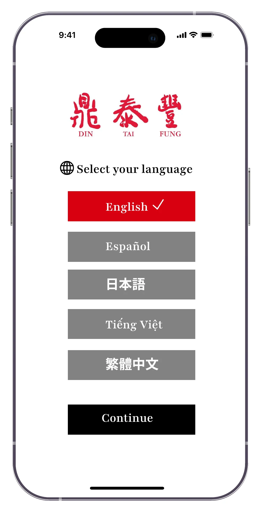
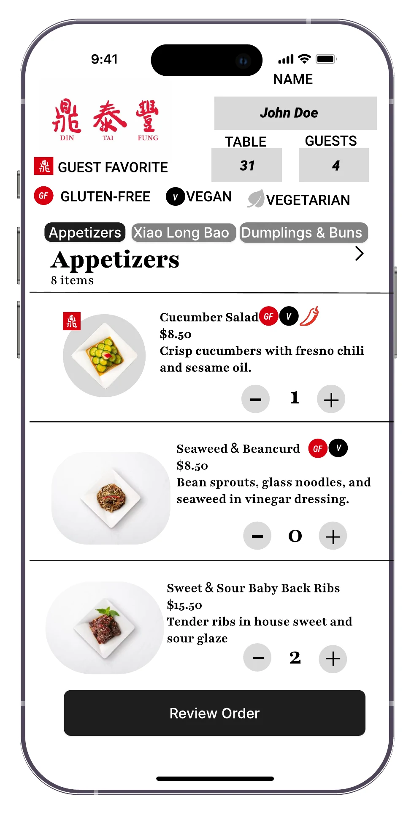
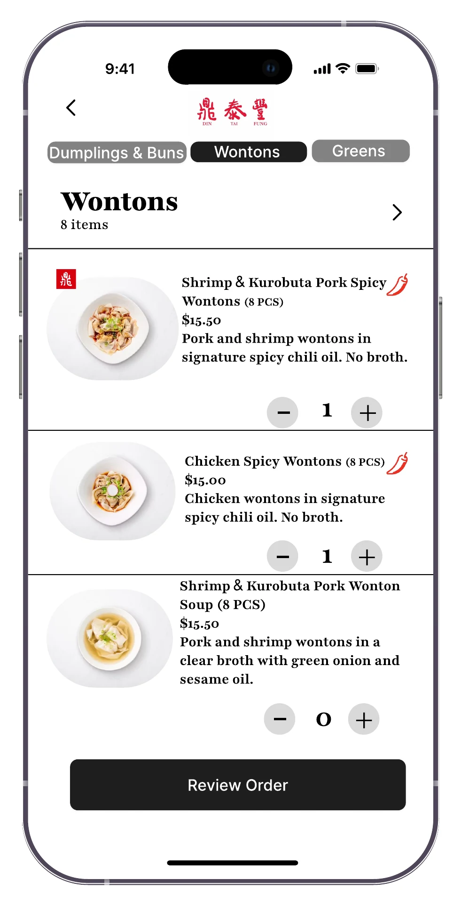
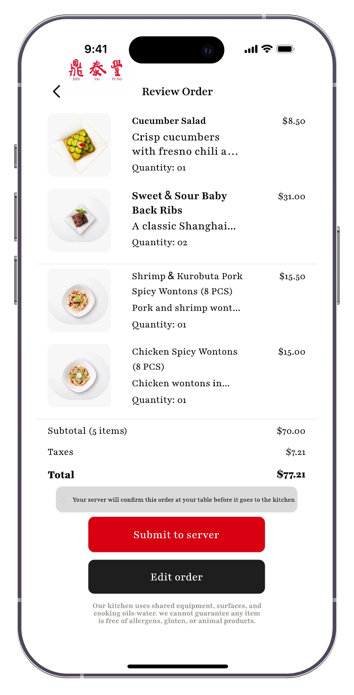
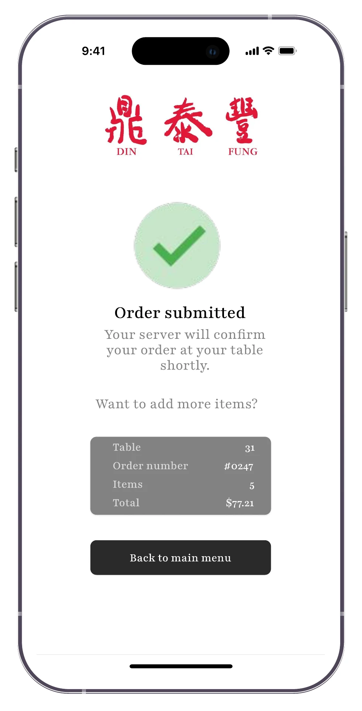

The Ticket
A QR code menu that shows guests what they're ordering, in their own language, so the wrong dish stops reaching the table.
Unofficial concept project. Not affiliated with, endorsed by, or made for Din Tai Fung. The Din Tai Fung name, logo, menu items, and food photos belong to Din Tai Fung and appear here only to show the design idea.
- Year
- Jun to Jul 2026Updated Nov 2026
- Role
- Solo project
- Tools
- Figma
- Focus
- UX research, UI design

(01)
Overview
I started this project during the 2026 World Cup, when Seattle filled up with fans from all over the world. A lot of them had a language barrier and needed pictures to know what they were ordering.
Din Tai Fung guests order on a paper sheet. Servers could tell them to scan the QR code for pictures, but that explanation often got lost in translation too. As a food runner, I'm the one carrying the wrong dish to the table. So I designed a digital menu that fixes the problem at the moment of ordering.
Pictures don't need a translator. That idea shaped the whole design.
(02)
The issue
Look alike dishes
Spicy Wontons and Wonton Soup sit close together and look almost the same on paper. Guests mark the wrong one, and the wrong dish goes out.
Messy handwriting
A rushed number turns a 1 into a 7, and nobody catches it until the food lands on the table.
One language
The sheet is in English. Guests who are more comfortable in another language end up guessing.
(03)
Research
I documented pain points during my own food running shifts: where orders went wrong, what guests asked about, and which dishes got mixed up most.
Problem statements → insights
| Guests mix up Spicy Wontons and Wonton Soup | → | A photo and one line description on every item |
| Handwritten numbers get misread | → | Tap to add quantities, no handwriting |
| Guests who don't read English guess | → | Pick a language before anything else |
| Mistakes reach the kitchen before anyone catches them | → | A server confirms every order at the table |
| Some guests love the paper sheet | → | Digital sits next to paper, not instead of it |
(04)
The product
Language first
The first screen asks guests to pick English, Spanish, Japanese, Vietnamese, or Traditional Chinese. Everything after follows their choice.
Photos that tell dishes apart
Spicy Wontons say "No broth." Wonton Soup says "clear broth with green onion." Two dishes that looked the same now look clearly different.
Server confirms
Orders go to the server, not straight to the kitchen. That keeps the human part of service and catches mistakes early.
Badges mark guest favorites, gluten free, vegan, and vegetarian dishes, and the review screen reminds guests that the kitchen uses shared equipment.
(05)
The flow



1. Pick a language, then browse. The wontons screen puts the two most mixed up dishes side by side, with photos and descriptions that make the difference obvious.


2. Review and send to your server. "Submit to server" makes it clear a person checks the order first. Guests get an order number and can go back for more.
(06)
What's next
Next steps
- Test the flow with coworkers and a few guests, and see where they hesitate.
- Compare how often orders go wrong on paper vs digital.
- Let guests add items mid meal without starting over.
What I learned
- The best problems are the ones you live. I see this one every shift.
- Small details prevent big mistakes. One line like "No broth" does a lot.
- Keep people in the loop. Server confirmation supports service instead of replacing it.
Next project
By Witness →